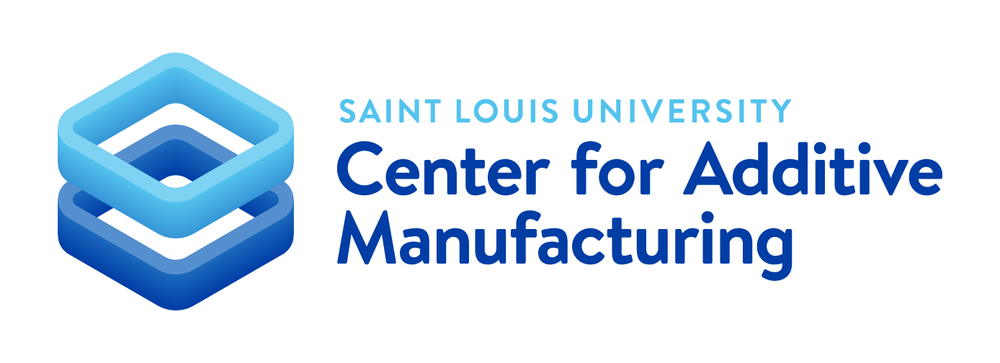

Client Update 1
Progress report 1 of Spring semester 2026
Reliability & Product Direction
The first two sprints of the semester focused on improving the reliability and the direction of the product. Through both small and large wins, we laid some excellent foundations for the remainder of the semester.
Non-SSO Login
Over the past two sprints, we have improved the login experience for non-SSO users, allowing shops to grant access to their resources to indviduals outside the SLU ecosystem or allowing them to create service accounts.
This is a move forward both for the SLU CoreDesk instance and for the overall product, making it possible for organizations without an SSO provider to use the platform.
This body of work included significant architecting, backend, and frontend work to ensure a smooth interaction for users while keeping the platform secure.
Plugin System
In order to host the TDNext integration without altering the core of CoreDesk's business logic, we architected a plugin system that allows non-critical add-ons to integrate with the core platform without adding bulk and risk to the main paths.
TDNext Integration
As the Academic Tech Commons in Pius Library transitions to using CoreDesk for its poster and 3d printing needs, a desire to integrate CoreDesk with their existing ticketing system, TDNext, was identified.
Incorporating TDNext into CoreDesk has been a group collaboration between CoreDesk, ITS, and the Pius Library/Academic Tech Commons team.
This work started with building a plugin system, then moving to securely integrate TDNext into CoreDesk and create the basis for a bi-directional link.
Rendering Service
Server-side STL rendering was completely rebuilt to improve overall application stability and rendering quality.
STL rendering is now handled by a seperate service, isolating the memory and CPU heavy rendering operations from the main application
Postgres upgrade
The production database was upgraded from v17.6 to v17.8, resulting in a small query time reduction, stability improvements, and adding point-in-time recovery.
E2E Test Setup
Automated e2e tests now run on each push, adding intentionality and preventing regressions.
Global error boundary
Error boundaries have been added to prevent small components from crashing the entire app.
API instance duplication
API now runs 2 clones, providing a hot fallback in case of failure, allowing time for recovery
Optimizations
API memory usage has been reduced from ~300mb to ~100mb
Billing Group Improvements
Assorted functionality improvements and bug fixes were pushed for billing groups
User Count
Over 700 users have visited CoreDesk at least once.
Crash-free sessions
Since taking on CoreDesk from the previous developer team, we have improved the crash-free session rate from 64% to 97%. Sprint 2 should provide a small bump. Planned sprint 3 and 4 will include a focus on testing preventing regressions.
Request latency
Across the board, api requests are roughly 100ms faster, providing a snappier feel.
